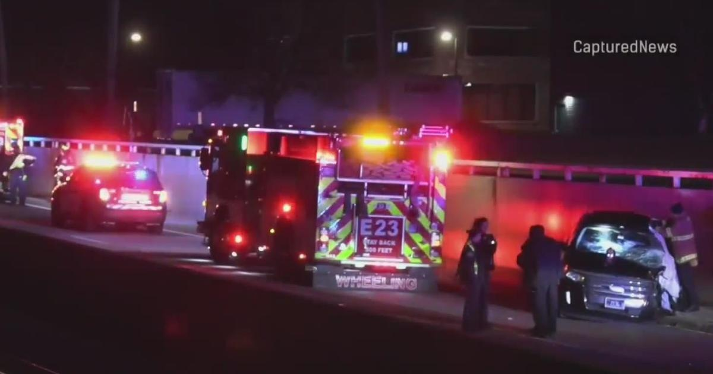

Palatine man charged in DUI wrong-way crash that killed teacher in Chicago suburbWHEELING, Ill. (CBS) – A man was in Wheeling earlier this month. Guillermo Salgado, 28, of Palatine, appeared at the Third District Courthouse in Rolling Meadows on Thursday. He was charged with reckless homicide and aggravated DUI. On Dec. 10, Around 2:15 a.m., a Ford Edge was headed west on Palatine Road near Wheeling Road, when a Toyota Camry driven by Salgado headed east in the wrong lane - striking the Ford head-on, according to police. There were two people in each vehicle. The driver of the Ford was killed in the crash. He was identified as 53-year-old Robert Gillen, of Palatine. One other person suffered a serious, but non-life-threatening injury. An investigation revealed that Salagdo's Blood Alcohol Content was more than .08 at the time of the crash, police said. He was released on electronic monitoring and home confinement with the exception of a medical appointment. He is due to appear back in court on Jan. 26. |
 |